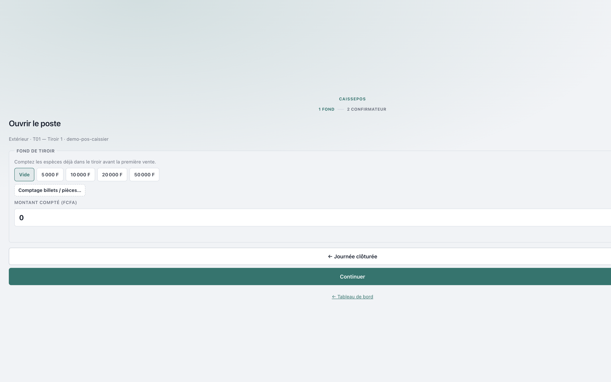
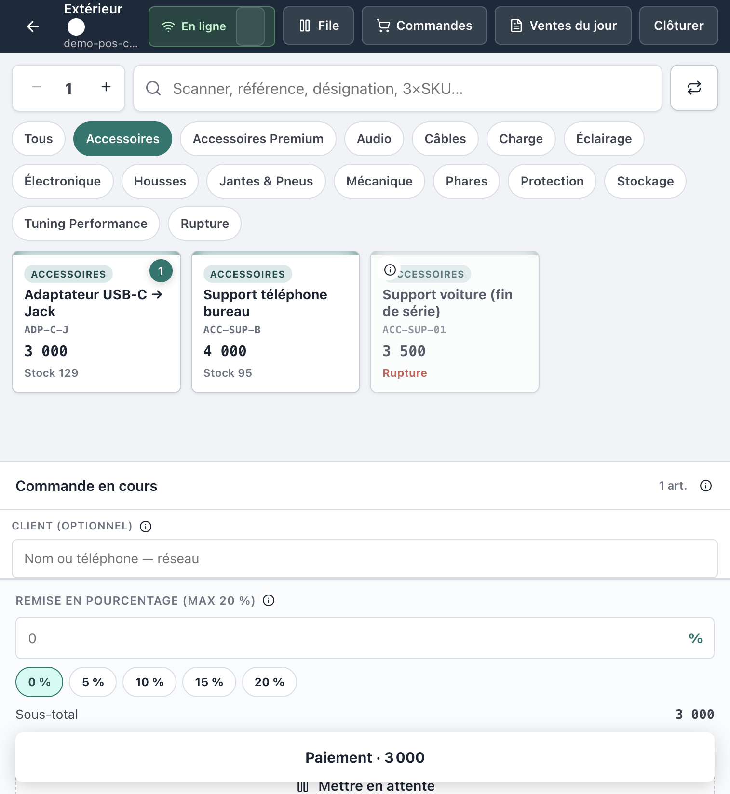
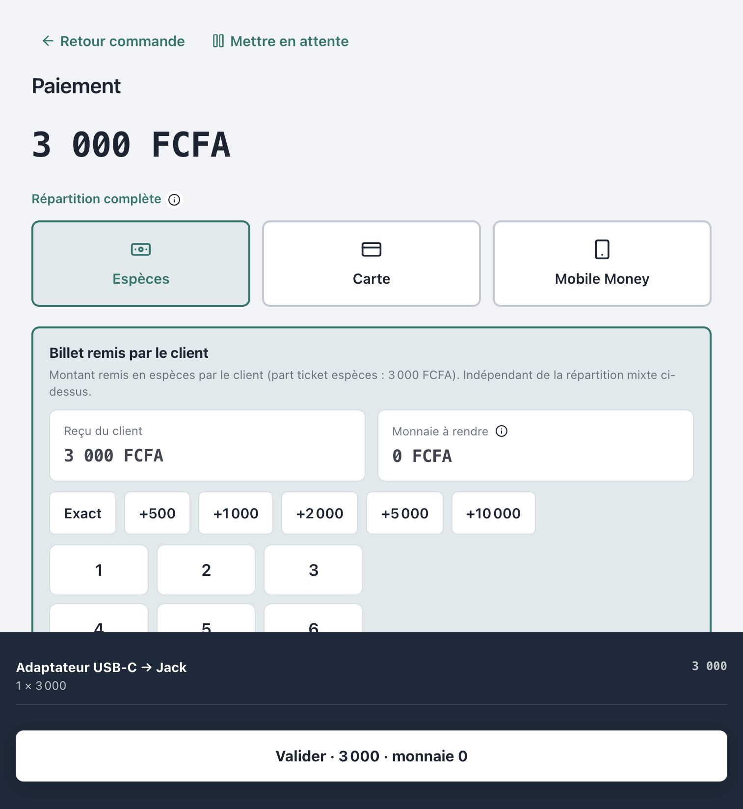

Progiciel Caisses & CRM — MAJOR AUTO PARTS
Public : Caissier(ère) boutique et Responsable
boutique
Périmètre : ouverture de session → ventes → clôture → transfert vers la
trésorerie principale (caisse centrale)
Captures réelles depuis l’application en production
(crm.majorautoparts.shop, compte démo POS). Les libellés
correspondent exactement à CaissePOS.
Connexion Internet (mode hors-ligne limité aux ventes en file
d’attente)
Imprimante ticket (si utilisée en boutique)
Un confirmateur (coéquipier ou responsable) pour
l’ouverture et la clôture
Règle d’or (séparation des
tâches)
Une caisse boutique encaisser et
initier le versement.
Elle ne réceptionne jamais et ne valide
jamais un versement à la centrale.
Seuls le Caissier central et le DAF
réceptionnent / valident.
2. Connexion
Ouvrir l’adresse CRM / POS de votre environnement (ex.
https://pos.majorautoparts.shop ou
https://crm.majorautoparts.shop).
Saisir votre Identifiant et votre Mot de
passe.
Cliquer sur Se connecter.
En production, valider le widget Cloudflare
Turnstile (anti-bots) s’il s’affiche.
Figure 1 — Écran de
connexion
Figure 1 — Connexion CaissePOS
Après connexion, le caissier arrive sur le Point de
vente. Le responsable peut aussi ouvrir Point de
vente depuis le menu Ventes.
3. Ouvrir le poste (fond de
tiroir)
Sans session ouverte, aucune vente n’est possible.
Étape A — Fond de tiroir
Sur l’écran Ouvrir le poste, choisir le
tiroir si plusieurs sont proposés.
Compter les espèces déjà présentes dans le tiroir.
Saisir le Montant compté (FCFA) (ou utiliser les
pastilles rapides : Vide, montants types).
Cliquer sur Continuer.

Figure 2 — Fond de tiroir
Figure 2 — Ouverture : comptage du fond
Étape B — Confirmateur
Sélectionner le confirmateur présent (responsable
magasin ou autre caissier habilité).
Saisir le mot de passe du confirmateur.
Cliquer sur Démarrer les ventes.
La session passe à l’état OUVERTE. Vous pouvez
encaisser.
Le fond d’ouverture servira de référence au moment de la clôture
(calcul de l’attendu).
4. Encaisser une vente
4.1 Composer le panier
Scanner le code-barres ou rechercher l’article (référence,
désignation, SKU).
Ajuster les quantités.
Appliquer une remise si besoin (plafond usuel
20 % ; au-delà, dérogation chef de caisse).
Vérifier Sous-total, Remise,
Total.
Actions utiles :
Mettre en attente — park du ticket
Vider le panier
Paiement · {montant} — passer à l’encaissement

Figure 3 — Panier / caisse
Figure 3 — Composition du panier
Barre supérieure utile : File,
Commandes, Ventes du jour,
Clôturer.
Indicateur En ligne / Hors ligne :
hors ligne, les ventes partent en file et se synchronisent au retour
réseau.
4.2 Paiement
Choisir un ou plusieurs modes : Espèces,
Carte, Mobile Money.
En espèces :
Saisir le reçu du client (billets)
Vérifier la monnaie à rendre
Client : laisser Client anonyme ou rattacher une
fiche CRM (optionnel — la vente anonyme est toujours autorisée).
Cliquer sur Valider · {total}.

Figure 4 — Écran paiement
Figure 4 — Paiement
4.3 Ticket
Le ticket s’affiche (et s’imprime si l’imprimante est
configurée).
Boutons : Réimprimer, Nouvelle
commande.
Reprendre les ventes pour le reste de la journée.
5. Clôturer la journée
Quand le magasin ferme (ou en fin de vacation) :
Vider ou finaliser le panier en cours.
Cliquer sur Clôturer (indisponible s’il reste des
ventes hors-ligne non synchronisées ou une file bloquante).
flowchart LR
A[Initiée<br/>Boutique] --> B[En transit<br/>Resp. / Convoyeur]
B --> C[Réceptionnée<br/>Caissier central / DAF]
C --> D[Validée<br/>Centrale]
C -.-> E[Litige]
B -.-> E
E --> D
8. Ce que la boutique
ne peut jamais faire
Action
Boutique
Centrale / DAF
Encaisser une vente
Oui
—
Initier un versement
Oui
—
Mettre en transit
Responsable / Convoyeur
—
Réceptionner un versement
Non
Oui
Valider / rapprocher
Non
Oui
Régulariser un litige magasin→centrale
Non
Contrôle interne / DAF
Toute tentative d’appel API hors rôle est refusée
(403) et journalisée.
9. Incidents fréquents
Symptôme
Que faire
Bouton Clôturer grisé
Synchroniser les ventes hors-ligne ; vider / finaliser la file
Écart à la clôture
Recompter ; l’écart peut créer un litige — prévenir
le responsable / contrôle
« Compte verrouillé » à la connexion
Attendre 15 min après 5 échecs, ou faire débloquer par l’admin
Widget anti-bot (Turnstile)
Cocher / attendre la validation Cloudflare avant Se
connecter
Pas d’imprimante
Utiliser Réimprimer plus tard ou l’état de clôture
PDF
Versement déjà Initiée
Ne pas ré-initier : passer à Mettre en transit
10. Rappel des comptes
démo (local / staging)
Mot de passe seed : MotDePasse!123 (jamais pour la production live)
Identifiant
Rôle
Usage
demo-pos-caissier
Caissier boutique
Encaisser / clôturer / initier
demo-pos-temoin
Responsable boutique
Confirmateur + transit
demo-central
Caissier central
Réception / validation (pas boutique)
demo-daf
DAF
Validation niveau 2
Checklist de fin de
journée (boutique)
Document couvrant le workflow POS §6.3 et la machine à états des
versements §6.4 — séparation des tâches §6.2. MAJOR AUTO PARTS · CaissePOS